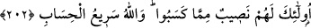

Bu âyetin özet anlamı şudur: Allah’ı çokça zikredin, O’ndan iki cihan saâdeti isteyin.
Âhıret talebi üzerine duâda kusurlu olanı anmayın. Çünkü sâdece âhıret tâlibi olan kişi
dünyâda bulunmaz. Zira hem dünyâ ve hem de âhıreti isteyenlere kazandıklarının
karşılığı güzel ameller cinsinden verilecektir ki o da sevâbtır. Ya da âyetteki “mimmâ
kesebû” daki “min” sebeb içindir. Buna göre âyetin mânâsı: “İşte onların kazançları
sebebiyle payları vardır.” şeklinde olur. Çünkü onlar bu güzel sevâbı, güzel amelleri
sebebiyle haketmişlerdir.
202. İşte onlar için, kazandıklarından büyük bir nasip vardır. (şüphesiz) Allah’ın
hesâbı çok süratlidir.
Âyette: “İşte onlar...” diye işâret edilenler hem bu dünyâ ve hem de âhıret için duâ
edenlerdir. Çünkü sadece dünyâ için duâ edenlerin durumu “Onların âhırette hiçbir
nasibi yoktur.” şeklinde belirtilmişti. Allah Teâlâ, âyetin devamında ölüm ile
korkutarak ve iyi amelleri teşvik için kendi kudret-i ilâhiyyesine işâretle şöyle
buyurmaktadır: “Allah hesâbı çabuk görendir.” Burada “hesab”dan maksad amellerin
karşılığının kendi cinsinden verilmesidir. Çünkü hesap, alma ve vermenin sebebidir.
Sebebin sonuca isim olarak verilmesi ise yaygın bir gelenektir. Yâni demek oluyor ki,
kulların ve amellerinin çokluğuna rağmen göz açıp kapayıncaya kadar kısa bir sürede
insanlar hesâba çekilirler. Çünkü Allah Teâlâ’nın böyle bir muhâsebe sırasında
parmaklarla saymaya, sözü iyice dinleyip kulak vermeye ve düşünüp yorum yapmaya
ihtiyacı yoktur. Bu sebeple öyle güçlü bir varlığa itaatta kusur etmekten sakının. Ya da
“Allah hesâbı serî olandır”ın mânâsı, “yakında kıyâmeti koparır, insanları hesâba
çeker,” demektir.
Eskilerden biri, bir konuşmasında şöyle demiştir: Dünyâ bir ayakkabı gibi
ihtiyarladı ve her tarafı su almaya başladı. Mü’min olan kişi hemen tâata ve
hasenâta yönelsin, her hâlü kârda zikirle meşgul olsun.
Hasan Basrî der ki: “Kul, Allah’ı çocuğun ana-babasını andığı gibi anmalıdır. Çünkü
çocuk, konuşmayı öğrenir öğrenmez “anne, baba” demeye başlar. Her müslümanın da
“ya Rabbi, ya Rabbi” demesi gerekir. Nitekim hadis-i kudsî’de şöyle buyrulur. “Benim
katımda, veli kullarımın en çok gıbta edilmeye lâyık olanı malı ve hesâbı hafif,
namazı çok ve Rabbına ibâdetini ihsan duygusuyla yapan, gönülden itaat eden,
insanlar arasında kendini gizleyen, bu yüzden de insanlar arasında parmakla
gösterilmeyen, rızkı yetecek ölçüde olduğu halde daima sabr edendir.” Hz.
Peygamber bunları söyledikten sonra elini vurarak şunları söyledi: “Böylelerinin dileği
çabucak olur. Böylelerin azığı da azdır, serveti de.”[127]
Hz. Peygamber (s.a.) “Rabbenâ âtinâ fi’d-dünyâ...” “Ey Rabbımız, bize dünyâda da